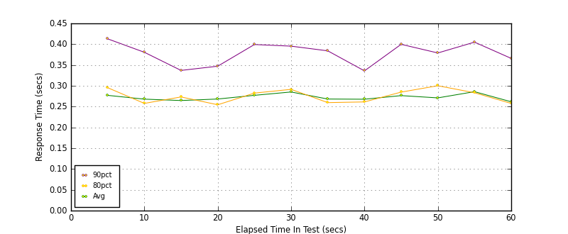

Performance Results Report
Summary
transactions: 32959
errors: 0
run time: 60 secs
rampup: 0 secs
test start: 2017-05-25 09:35:11
test finish: 2017-05-25 09:36:10
time-series interval: 5 secs
workload configuration:
| group name | threads | script name |
|---|
| user_group-10 | 10 | redis_stress.py |
| user_group-11 | 10 | redis_stress.py |
| user_group-12 | 10 | redis_stress.py |
| user_group-13 | 10 | redis_stress.py |
| user_group-14 | 10 | redis_stress.py |
| user_group-15 | 10 | redis_stress.py |
| user_group-2 | 10 | redis_stress.py |
| user_group-3 | 10 | redis_stress.py |
| user_group-1 | 10 | redis_stress.py |
| user_group-6 | 10 | redis_stress.py |
| user_group-7 | 10 | redis_stress.py |
| user_group-4 | 10 | redis_stress.py |
| user_group-5 | 10 | redis_stress.py |
| user_group-8 | 10 | redis_stress.py |
| user_group-9 | 10 | redis_stress.py |
All Transactions
Transaction Response Summary (secs)
| count | min | avg | 80pct | 90pct | 95pct | max | stdev |
|---|
| 32959 | 0.068 | 0.272 | 0.272 | 0.382 | 1.150 | 3.219 | 0.251 |
Interval Details (secs)
| interval | count | rate | min | avg | 80pct | 90pct | 95pct | max | stdev |
|---|
| 1 | 2597 | 519.40 | 0.070 | 0.277 | 0.295 | 0.413 | 1.143 | 2.225 | 0.257 |
| 2 | 2802 | 560.40 | 0.068 | 0.268 | 0.258 | 0.381 | 1.161 | 2.246 | 0.255 |
| 3 | 2829 | 565.80 | 0.090 | 0.265 | 0.273 | 0.337 | 0.464 | 2.195 | 0.212 |
| 4 | 2802 | 560.40 | 0.089 | 0.268 | 0.254 | 0.347 | 1.140 | 2.220 | 0.247 |
| 5 | 2684 | 536.80 | 0.083 | 0.277 | 0.282 | 0.399 | 1.161 | 3.219 | 0.275 |
| 6 | 2669 | 533.80 | 0.084 | 0.285 | 0.291 | 0.395 | 1.149 | 2.220 | 0.250 |
| 7 | 2750 | 550.00 | 0.087 | 0.268 | 0.260 | 0.384 | 1.147 | 2.273 | 0.239 |
| 8 | 2864 | 572.80 | 0.087 | 0.268 | 0.261 | 0.336 | 0.834 | 2.249 | 0.235 |
| 9 | 2646 | 529.20 | 0.085 | 0.276 | 0.285 | 0.400 | 1.166 | 2.204 | 0.260 |
| 10 | 2684 | 536.80 | 0.088 | 0.271 | 0.300 | 0.379 | 1.134 | 3.129 | 0.262 |
| 11 | 2722 | 544.40 | 0.090 | 0.286 | 0.283 | 0.405 | 1.183 | 2.428 | 0.279 |
| 12 | 2760 | 552.00 | 0.083 | 0.262 | 0.258 | 0.366 | 1.091 | 2.405 | 0.238 |
Graphs
Response Time: 5 sec time-series

Response Time: raw data (all points)
Throughput: 5 sec time-series